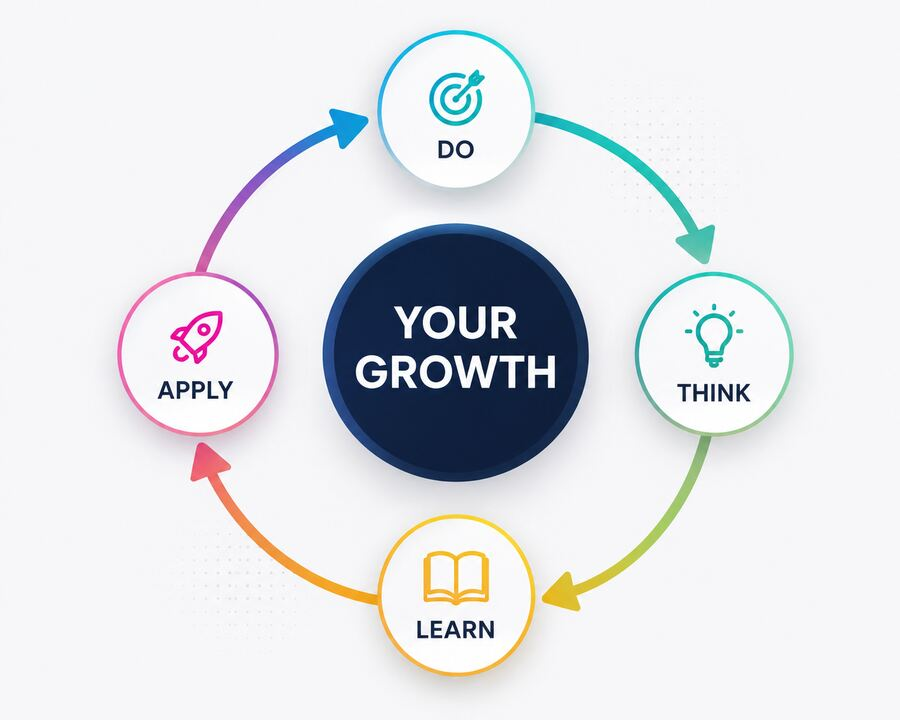
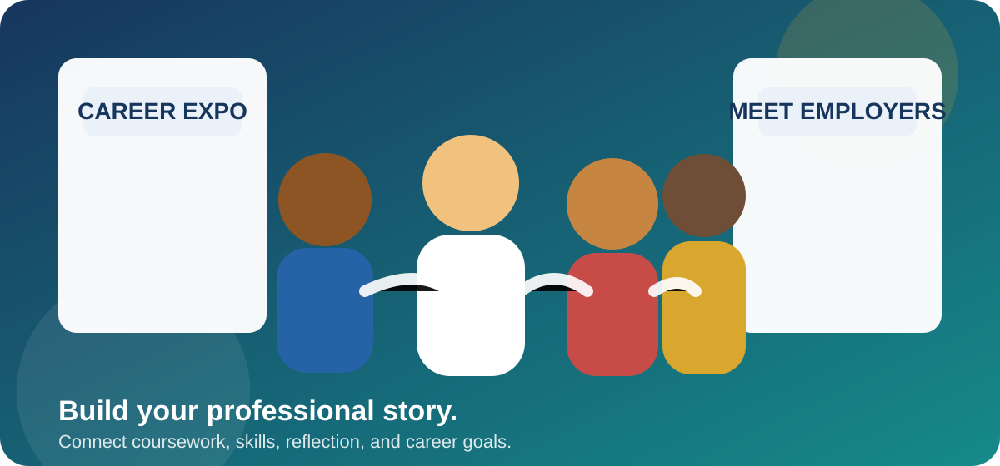
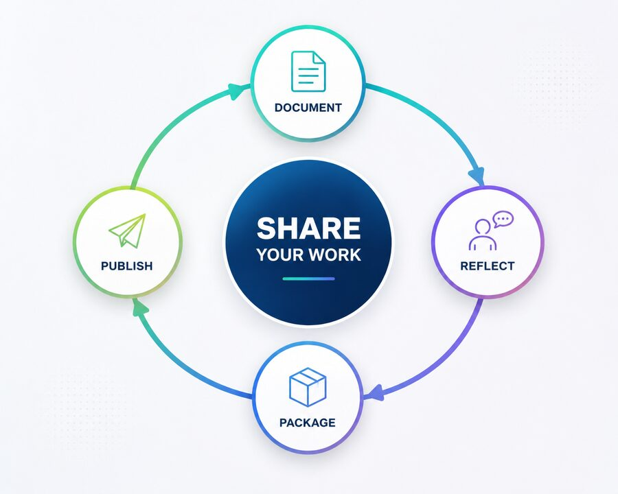

Reflection
Looking back on an experience to identify learning, challenges, strengths, and future improvements.
Ask: What happened, and what did I learn from it?
This lesson introduces the purpose of an ePortfolio and helps you prepare to build a professional digital space that grows with you throughout your program.
Transcript pending. Add one before publishing with real audio, per accessibility standards.
An ePortfolio is a professional digital collection of your academic work, technical projects, achievements, skills, experiences, and reflections. It gives you a place to present evidence of what you know and what you can do.
Select each card below to reveal the answer.
A professional website that organizes your strongest evidence, accomplishments, and growth.
Employers, internship coordinators, professional contacts, graduate programs, and others evaluating your work.
Selected projects, skill evidence, reflections, credentials, resume materials, and professional contact links.
You add and improve content throughout your program instead of trying to build everything immediately before graduation.
A resume summarizes your qualifications. An ePortfolio gives you room to demonstrate them through real examples, explanations, and reflections.
| Resume | ePortfolio |
|---|---|
| Summarizes experience | Demonstrates experience |
| Lists skills | Shows evidence of skills |
| Usually one or two pages | Allows greater depth |
| Tells employers what you did | Helps employers see what you produced |
| Updated periodically | Grows throughout your program |
Which situation best shows why a hiring manager would ask for an ePortfolio in addition to a resume?
A professional ePortfolio is valuable only when you can explain what you created, why you made particular decisions, what you learned, and how the experience changed your approach.
“We do not learn from experience. We learn from reflecting on experience.”
It helps you identify evidence of growth, connect coursework to career skills, and prepare to discuss your work naturally instead of memorizing an AI-generated script.

Looking back on an experience to identify learning, challenges, strengths, and future improvements.
Ask: What happened, and what did I learn from it?
Thinking about how you think and learn, including the strategies that helped or limited you.
Ask: How did I approach this, and why?
Analyzing information, evaluating options, explaining decisions, and drawing supported conclusions.
Ask: What evidence guided my decision?
Recognizing how your knowledge, skills, confidence, and professional judgment develop over time.
Ask: What can I do now that I could not do before?
Select a concept on the left, then select the question on the right that matches it. Matched pairs are marked with a checkmark.
0 of 4 matched
What did you create or complete?
What problem, goal, evidence, and decisions shaped your work?
What worked well, and what was challenging?
What would you revise or do differently next time?
How does this learning relate to your career and future work?
Employers may ask you to explain a project, defend a decision, discuss feedback, or identify what you would improve. Your ePortfolio should help you prepare. It should not give you a script to memorize.

Replace the placeholder with an approved Panopto, YouTube, or MP4 video when the recording is ready. The transcript below makes the content available now.
Imagine an interviewer asks, “Tell me about one of the projects in your ePortfolio.” Instead of saying only that you completed it for class, briefly explain the problem or goal, the approach you took, the tools you used, and the skills you developed.
Discussing a challenge is also valuable. Explain how you responded, what you learned, and what you would improve today. Your ePortfolio is not simply a collection of assignments; it is evidence of your thinking, growth, and readiness to contribute professionally.
Use these five elements to prepare a short, natural explanation of any project or assignment in your portfolio.
What was the project and why did it matter?
What process, tools, or strategies did you use?
What problem, limitation, or setback did you encounter?
What did you produce, discover, or improve?
What did you learn, and how will you apply it?
As you add artifacts to your portfolio, consider how you would respond to the following questions about it during an interview. Reveal coaching prompts for each as you consider these by expanding each item below.
Briefly name the project and goal. Explain your role, approach, key decisions, result, and one lesson you can apply professionally.
Describe a real obstacle, how you diagnosed it, what options you considered, what action you took, and what you learned.
Identify the information or evidence you reviewed, alternatives you considered, constraints you faced, and why your final choice was reasonable.
Show growth rather than regret. Explain what new knowledge, feedback, or experience would change your approach.
Explain the feedback, how you evaluated it, what you revised, and how the revision improved the outcome or your process.
Connect the project’s tasks and skills directly to the role’s responsibilities without overstating your experience.
“This project taught me many valuable skills and helped me grow professionally.”
This statement is vague and could describe almost any assignment.
“Comparing router-on-a-stick with multilayer switching helped me understand how network size and traffic requirements affect design decisions.”
This response identifies the work, the learning, and the reasoning behind it.
Before you add real content, it helps to plan the basic structure your ePortfolio will use, sometimes called a skeleton. You will build out each of these sections gradually over time, adding stronger evidence as you complete more coursework and projects.
Include your name, degree program, professional interests, career direction, and a short value statement.
Explain your academic background, career goals, strengths, field interests, and professional motivation.
Include both technical skills and professional skills, supported by project evidence whenever possible.
Each project should include a title, course, overview, purpose, process, tools, skills, results, reflection, and artifact link.
Provide a link to a current PDF version of your resume that visitors can view or download.
Include industry certifications, digital badges, licenses, academic honors, and relevant training.
Document reflections, milestones, career goals, improvements after feedback, and future development plans.
Use a professional email address and appropriate professional profiles such as LinkedIn or GitHub.
Your profile image is often one of the first elements visitors notice. Choose an image that supports the professional identity you want your ePortfolio to communicate.
You do not have to publish a personal photograph. A professional alternative may be more appropriate for your preferences or privacy needs.
Professional alternatives include:
If you do choose to include a personal photo, here is what to know:
These sample headshots reinforce the existing guidance: clear lighting, simple backgrounds, appropriate attire, and an approachable expression.
A classmate's profile photo is a tightly cropped face from a group photo taken at a party, with drinks visible in the background. They say it's fine because their face is clearly visible. What is the most professional feedback to give them?
Your ePortfolio should reflect your professional goals without becoming distracting or difficult to read. Use this studio to explore professional color palettes, typography, layout, and accessibility recommendations.
Use the same colors, fonts, button styles, and navigation patterns throughout the portfolio.
Choose strong text contrast, readable font sizes, clear headings, and sufficient spacing.
Let your work and accomplishments stand out. Avoid excessive animation, clutter, and decorative elements.
Select each step below to walk through color, typography, and accessibility guidance.
Select a palette below, and the preview updates automatically.
Building skills in enterprise networking, information security, technical communication, and problem-solving.
Previewing the Professional Technology palette.
Use one font family or a simple two-font combination. Readability should always come before decoration.
Clear typography helps employers scan your experience, skills, and accomplishments.
Consider Arial, Aptos, Calibri, Inter, Roboto, or Open Sans.
Decorative typography can become difficult to read and may weaken the professional impression.
Avoid novelty, script, or highly decorative fonts, and dated defaults like Times New Roman, for body text.
Accessibility improves usability for everyone and should be built into the portfolio from the beginning.
Which design choice is most appropriate for a professional ePortfolio?
Use this checklist before you send your portfolio link to anyone professionally. Check each item once you have confirmed it.
Your project should be easy to understand and easy to maintain. Every project needs context, evidence, and reflection, but you may choose how much web development you want to manage.

Gather what you built: screenshots, code, diagrams, or files, plus a short written overview of the problem, your approach, and the result. This is the raw material for whichever format you choose next.
You may choose how much web development you want to manage.
Create a separate PDF summary for a major project that includes links to any project files you stored in Google Drive, and then link to that document in your ePortfolio. AI could help you generate that PDF project summary with images, web-friendly design formats, etc.
This shows what a project page looks like once it is exported to PDF, useful when an employer asks for an attachment instead of a link. The PDF itself links back to the live page.
Create a separate HTML page for a major project. This is best if you want to demonstrate web development skills or present screenshots, code, diagrams, and multiple files.
Course: CYB320, Intermediate Routing and Switching
This research project examines how VLAN segmentation and inter-VLAN routing can improve security, reduce broadcast traffic, and support scalable enterprise network design.
Skills demonstrated: Network security, VLANs, routing, research, technical writing, and problem-solving.
Reflection: The project strengthened my understanding of how design decisions affect both security and performance.
View Project PDFThe ECPI ePortfolio Coach can help you brainstorm sections, refine project descriptions, identify skills demonstrated by your coursework, develop reflection responses, review professional tone, and generate accessible starter code.
Review every recommendation, verify accuracy, protect private information, and revise the final content so it reflects your authentic experiences and professional voice.
Select the best answer for each question, then submit your responses.
Every assignment, project, and reflection you add can strengthen your professional story. Continue refining your ePortfolio throughout your program so it grows alongside your knowledge, skills, confidence, and career goals.